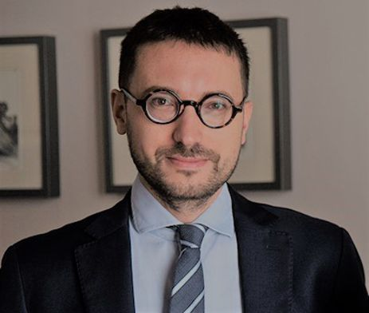

Legal Advisory

Marta Pignatiello
Lawyer & Legal Advisor
Marta holds a Law Degree from the University of Naples and is a practicing Italian lawyer. Since 2021, Marta has focused exclusively on Italian citizenship by descent (Jure Sanguinis). Cases are accepted only after a thorough eligibility review and document analysis to ensure each client has the strongest possible foundation for their application.

Andrea Ponte
Lawyer & Legal Advisor
Andrea holds a Law Degree from the University of Turin and is a practicing Italian lawyer with extensive experience representing cases in Italian court. Andrea collaborates closely with Aldo to prepare and present citizenship cases in Italian court, ensuring every filing meets the exact standards required for a successful judgment.